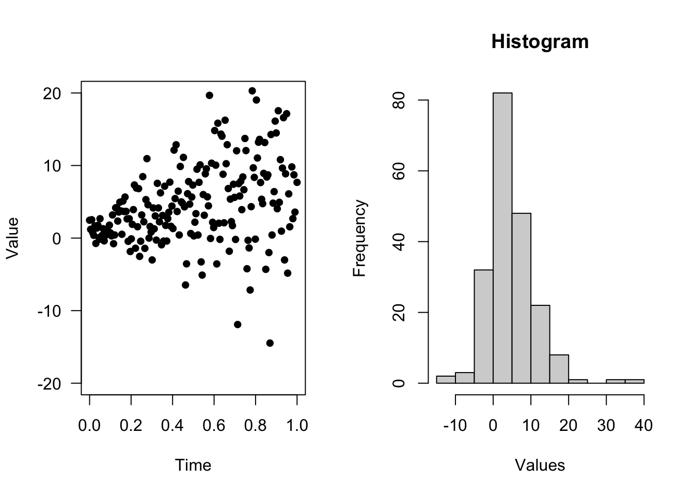

%?<-%: Assign if invalidWhen coding in R, the data checking is actually a headache. For example, to check if a variable aa exists and not NULL, otherwise set a default value to be 1, the check looks like:
Most of time we are repeating ourselves. With %?<-% operator, we just need:
The powerful part is the left-hand side can be any expression. For example,
If the value exists, then %?<-% does nothing (not even evaluate the expressions on the right-hand side)
In modern JavaScript, function can be created via (arg) => { ... }. For example,
dipsaus provides functions iapply, and %=>%, together with glue package, we can apply elements like this:
# gl <- glue::glue
# `%>%` <- magrittr::`%>%`
li <- c('A', 'T', 'G', 'C')
li %>% iapply(c(el, ii) %=>% {
gl('The index for {el} is {ii}')
})
#> [1] "The index for A is 1" "The index for T is 2" "The index for G is 3"
#> [4] "The index for C is 4"%=>% collect the left-hand side elements as arguments and right-hand side expression as body and create function:
match_calls
The function match.call provided by base package let us format calls with formals matched.
match.call(textInput, call = quote(textInput('inputId', 'label', 'aaa')))
#> textInput(inputId = "inputId", label = "label", value = "aaa")This is already powerful as we can parse the expressions using as.list() to get the input parameters. However, when encounter the nested calls like shiny UI components, match.call does not work well. We can’t see the matched results inside of the nested functions.
match.call(tagList, call = quote(tagList(
div(
tags$ul(
tags$li(textInput('inputId', 'label', 'aaa'))
)
)
)))
#> tagList(div(tags$ul(tags$li(textInput("inputId", "label", "aaa")))))match_calls solves this problem by recursively calling match.call:
match_calls(call = tagList(
div(
tags$ul(
tags$li(textInput('inputId', 'label', 'aaa'))
)
)
), recursive = TRUE)
#> tagList(div(tags$ul(tags$li(textInput(inputId = "inputId", label = "label",
#> value = "aaa")))))It can also change modify the calls. For example, we want to add ns to input ID in shiny modules, then the following replave_args changes "inputId" to ns("inputId")
match_calls(call = tagList(
div(
tags$ul(
tags$li(textInput('inputId', 'label', 'aaa'))
)
)
), recursive = TRUE, replace_args = list(
'inputId' = function(v, ...){
as.call(list(quote(ns), v))
}
))
#> tagList(div(tags$ul(tags$li(textInput(inputId = ns("inputId"),
#> label = "label", value = "aaa")))))Pipe functions can simplify the workflow and make R code more readable. The most popular pipe %>% allows the left-hand elements to be the first input of the right-hand side functions. dipsaus provides several pipe-friendly functions.
no_op
no_op takes whatever input in, and returns the input, with side effects. For example, we want to plot the results from the pipe and continue the analysis, usually this is what happens:
With no_op, the pipe becomes:
Here’s an example
par(mfrow = c(1,2))
(1:10) %>%
iapply(c(el, ii) %=>% {
rnorm(20, el, ii)
}, simplify = FALSE) %>%
unlist %>%
# Begin no-ops, result will not change
no_op({
# Use expression and "." to refer the data
print(summary(.))
}) %>%
no_op(
# Use function and pass ... to function
plot, x = seq(0,1,length.out = 200),
type = 'p', ylim = c(-20,20), pch = 16,
xlab = 'Time', ylab = 'Value', las = 1
) %>%
no_op(hist, xlab = 'Values', main = 'Histogram') ->
result
#> Min. 1st Qu. Median Mean 3rd Qu. Max.
#> -9.0858 0.9602 4.1531 5.8707 10.4498 23.2076
do_aggregate
This is a wrapper of aggregate function. When using formula, aggregate requires the formula to be the first element. If the pipe results are data.frame and we want to use formula, it’s super inconvenient.
## S3 method for class 'formula'
aggregate(formula, data, FUN, ..., subset, na.action = na.omit)do_aggregate allows the first element to be data frames while using formula: